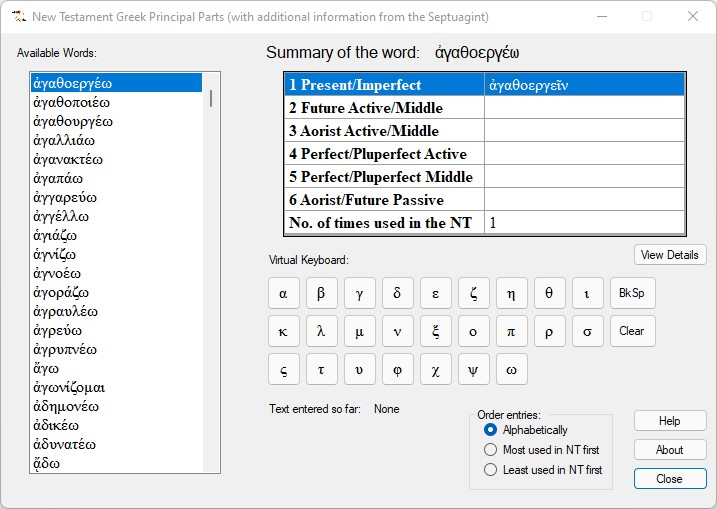
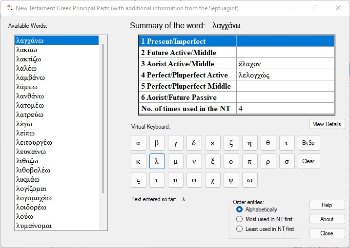
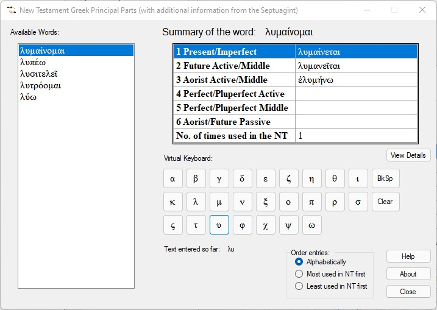
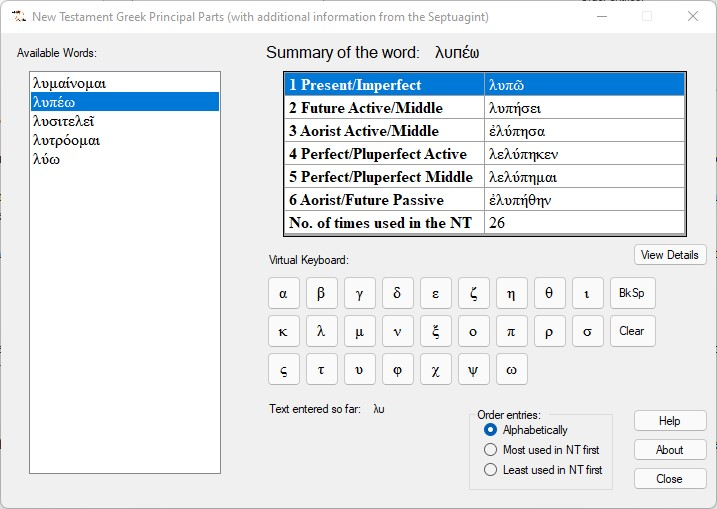
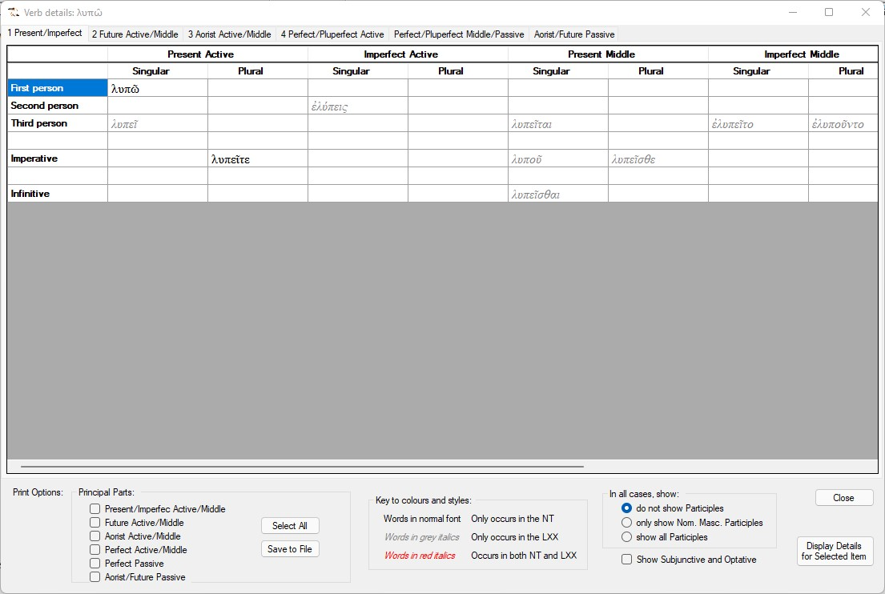
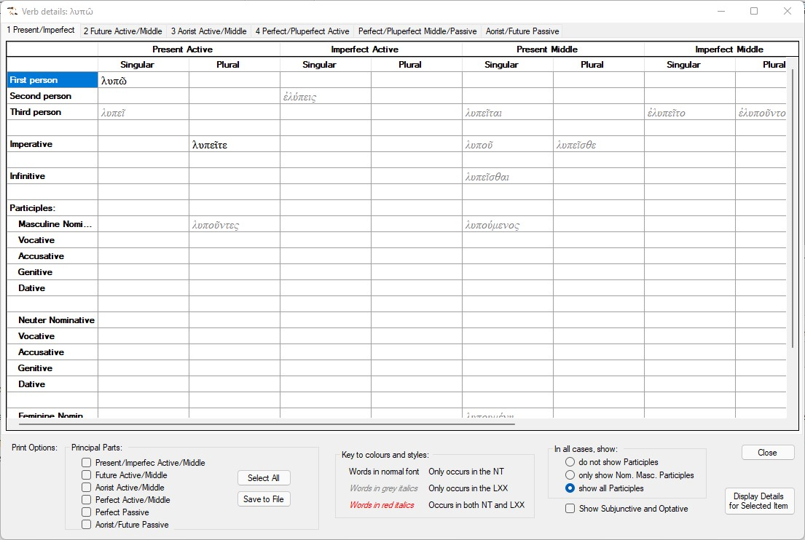
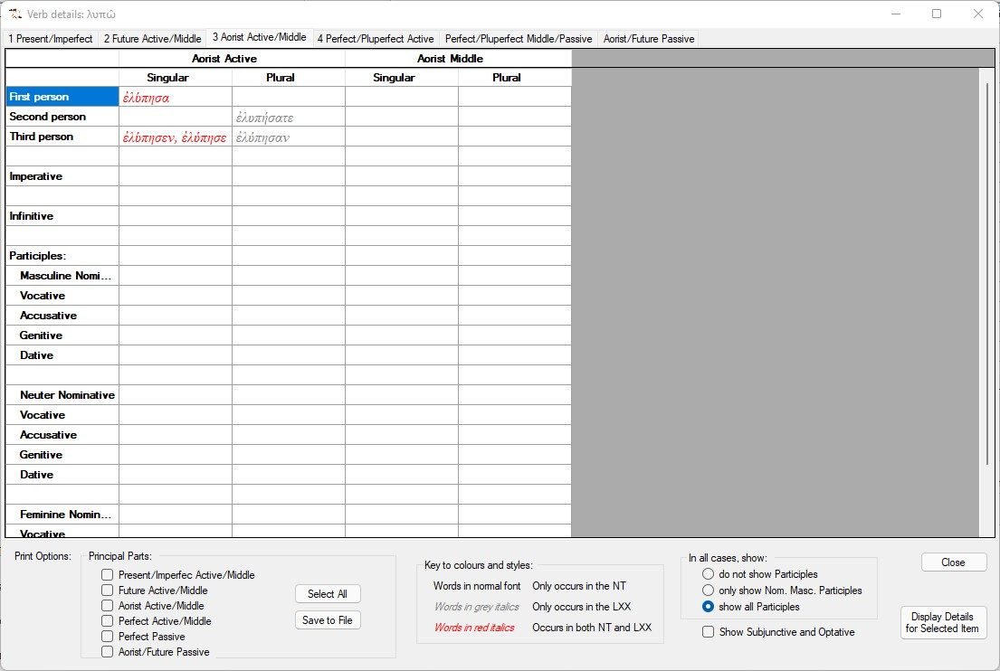
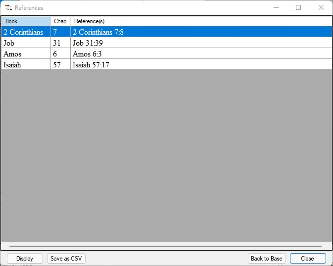
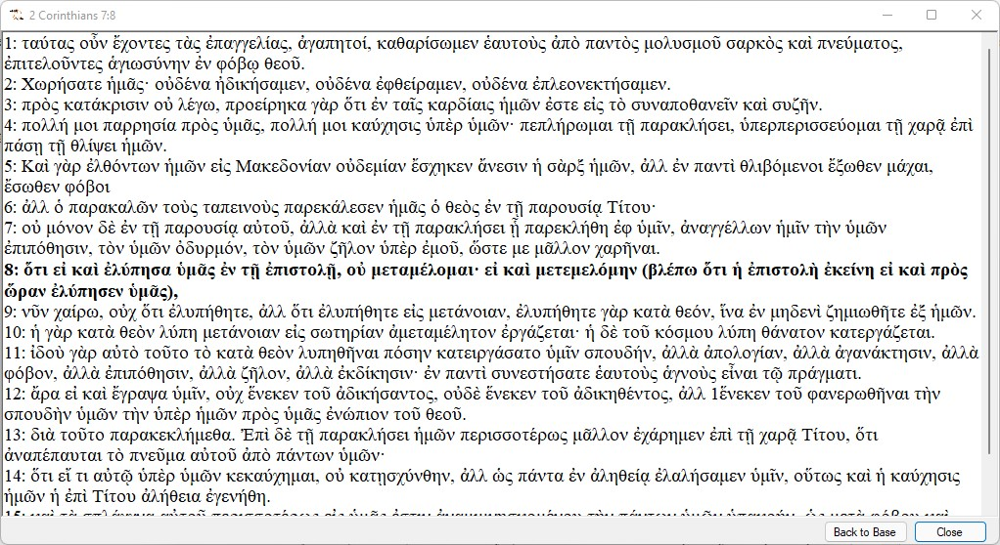

The Greek verb system is quite complex. Like English (and most modern languages), it has a number of tenses. The student (or, indeed, experienced reader) has to be able to identify which tense is being used by the word he or she is currently reading and understand the possible nuances introduced with that verb in that tense. Many of the tenses are common in modern European languages: present, imperfect, perfect and future. There is an additional tense that isn't found in modern languages: the aorist. Traditionally this has been understood as referring to completed past actions (while other past tenses have additional nuances). However, over the years there have been volumes written on the topic and a great deal of debate about just how much this is true.
But the complexity doesn't end with the aorist. Like all languages it has structures that don't simply function as the verb in action (the indicative) but provide additional significance: imperative and indicative moods. As in many European languages, one of the additional moods in Greek is the subjunctive. This is sometimes a problem for English speakers because the subjunctive has almost completely disappeared from the language. Even where it is used in modern languages, its use in ancient Greek was arguably more widespread and consistent.
In addition to this, there are some examples of the optative. This is a mystery to most modern language speakers but, thankfully, had almost disappeared from use by the time of the New Testament and is generally restricted to set phrases.
The participle is something Greek has in common with all European languages but, in Greek, it is particularly complex.
Having said all this, there is a yet more demanding complexity: the voice. Anything you say in the active voice can be mirrored by the passive voice and the same edifice of tenses and moods has its own rules in the passive voice. But, what causes most confusion is that Greek has a third voice: the middle voice. There is copious debate about exactly how we should understand this voice. To add fuel to the fire, many verbs in the middle voice look and feel like normal active verbs and there are even verbs that are not found in the active voice but function wholly in the middle form.
So, why have we given this summary? When we learn any Greek verb we are encouraged to learn six key forms, known as Principal Parts. The idea is that for all except a very small number of exceptionally irregular verbs, knowing these six forms allows you to recreate the whole structure of the verb (known as a Paradigm). We'll take an example from A Catalogue of Greek Verbs ... by James Skerret Baird [London, 1880].
|
ἐγείρω - I raise
|
||||||
| Present Active | Future Active | Perfect Active | Perfect Passive | 1st Aorist Active | 2nd Aorist Active | 2nd Perfect |
| ἐγείρω | ἐγερῶ | ἐγήγερκα | ἐγήγερμαι | ἤγειρα, ἠέρθην | ἐγρόμην, ἠγρομην | ἐγρήγορα, ἐγρήγορθα |
(I know! There are seven columns in this table. Baird structured the principal parts differently. Also, he covered the entire Classical literature while we are only interested in the New Testament - with some acknowledgement of the Septuagint.)
There is also a practical problem with lists of principal parts when they are provided in grammars: they are ideals. In order to provide didactic value, they often invent word forms which are not found in our literature. NTPrincipal Parts provides selected analysis of verbs found in the New Testament but will only show forms that are actually used (in our source text, anyway). To provide a somewhat wider view, we have also included forms used in the Septuagint (LXX) but we have marked words only found in the LXX in red italics.
When you start NTPrincipalParts, after a short period where it initialises itself and asks you to be patient, you will be faced with a fairly busy, small window:

This is made up of four areas:
Let's explain each of these areas:
The list, by default, will contain all the verbs used in the New Testament. We'll explain what you do with this list when we come to the virtual keyboard.
This simply lists the six principal parts plus frequency of use. To make its use clearer, let's show a screenshot of a verb that is used more than once:
(We're putting the word, keyboard, in quotes because it barely qualifies as a keyboard but it is a way of easily entering Greek characters without you having to install a second keyboard on your PC.)
Because the word lists are every verb in the NT, you will often want to narrow the list down. This "keyboard" allows you to do that.
Suppose, for example, that you want to investigate the use of λυπέω. To reduce the size of the list, we can type the letter λ:

Well, that helped but it's still a sizable list, so let's add υ:

Now the list is a manageable size and we can easily select the word we're interested in.
Note also that we can keep track of what we've typed in the text below the "keyboard". If we press the clear button or change the grammatical category, the buffer containing our pre-selection text will be cleared and we will see the full list once again.
At this point we need to comment on some aspects of the Summary that keen-eyed readers may have noticed. The obvious comment is that some parts are left blank. This means that no examples of that part of the verb's paradigm was found. The words being reported actually occur in the text; if nothing occurs under that heading, then nothing can be reported.
Note also that the form reported is often not first person singular indicative. For example, the image for ἀγαθοεργέω shows the "Present/Imperfect" part as ἀγαθοεργεῖν, the infinitive. This is because this is the nearest form to its dictionary form that is actually used in either the NT or the LXX.
The last element of the form that needs explanation is the group of three options called "Order entries". This will simply change the order in which verbs are displayed in the list of available words. The second and third options relate to the final entry in the Summary of the word: the frequency of use of the word in the New Testament. You can experiment with this to get the idea: it doesn't actually change anything.
The Summary of the word provides a real-world list of principal parts. It will normally be useful to see a more detailed usage of the verb and you can get this by clicking on the View Details button. This will display a comprehensive breakdown of the verb currently being summarised:


As you might expect from something called a detail, this form is much busier than the main form and will require some explanation.
Note that we have six tabs at the top representing each of the principal parts. For the time being we will stay with the first tab, giving all the uses of the verb that relate to the present (and imperfect) in all voices.
Note the options in the bottom panel near the right. By default, the options are set to avoiding participles, Subjunctive and Optative. If you change any of these options, the effects will be displayed immediately. (You will probably need to scroll down to see all the entries.) Once you have changed an option, that will remain in effect until you change it again. The application will also remember you last settings when you close the application.

Click on the different tabs and you will see comparable information for the other principal parts.
Note that, under the first tab, some entries are in "normal" print and others are in a lighter, grey colour (and in italics). If you select the third tab you will also see that some entries are in red italics:

The different colours are indicators of the roll played by the LXX as well as the NT. (Just in case you need reminding when using the utility, there is a "key" in the bottom panel.) The colours of the following significance:
Note, however, that some of the possibilities are blank. This means that not used in either NT or LXX, so it doesn't occur in our analysis.
You can select one, several or all principal parts to save. When you do, the file is saved as a tab-delimited file in the same form as the detail form. (In fact, it will save a separate file for each principal part that you select.) To activate the save, click on Save to File. You only need to do this once for all tabs on the form.
If you select a specific form of the analysed word and double click on it, you will be provided with a list of all the occurrences of that form in the New Testament.
For example, we select (double click) ἐλύπησα (in the third tab) , we get the following dialog:

You can also arrive at the same point by highlighting the word of interest and then clicking on the button: Display Details for Selected Item.
In exactly the same way as before, you can save this list as a tab-delimited file. Click on the Save as CSV button.
We haven't really discussed the various close buttons - because they normally do exactly what you would expect. However, we are so far down the tree of activity that we have provided a means of closing all the windows back to the first window: clicking on Back to base will do exactly that.
If you highlight a particular chapter and then click on the Display button, NTPrincipalParts will open one more window with the text of the whole chapter:

You can resize this window to suit.
Note that all verses that contain the specific form of your selected word are displayed in bold text. You also have the Back to base option at this level.
As before, you can navigate to this point by double clicking on the reference whose chapter you want to see.
At all levels (other than the base window) you can return to earlier windows without closing the latest window and you can open a second, third, etc. window:
This has been provided deliberately so that you can easily make comparisons across categories. Be aware, though, that clicking on Back to base will:
The application is provided for free use. This can only be done because so much is now available in the public domain. But that doesn't mean that we can simply ignore the efforts that have gone into producing the data in usable form or even, in some instances, the intellectual property contained in the data.
The Greek text of the New Testament that is used here is derived from text that (I understand) is ultimately traced back to CCAT (The Center for Computer Analysis of Texts) at Pennsylvania University - although this itself was based on efforts of a number of pioneers (see the article at https://www.sbl-site.org/publications/article.aspx?ArticleId=246 for example). More directly, it seems to have been the responsibility of SBL ( which is still copyright of the Society of Biblical Literature - see http://www.sbl-site.org) although, as far as I can see, it is essentially Westcott & Hort. Although I find it morally doubtful to claim copyright on the Greek text of the New Testament (as opposed, for example, to critical appendices and textual analysis), I am happy to acknowledge the enormous amount of work done over the years.
As implied by some of these comments, so many variations in presentation now exist on the internet that it is difficult to be precise about where some of it has come from and what path it has taken. A practical implication is that it doesn't do away with your need to use an up-to-date version that represents modern scholarship: you will find some words used in the text are now considered, at best, less likely variants.
One further name that needs to be mentioned is James Tauber. He has done an amazing job in providing a well-constructed parsed version that has been invaluable. You can see some details at http://jtauber.com/new_testament_greek and you can learn more of him and his work from there.
In developing the application, we have identified some errors in the parsing of words in the LXX data. It was only a handful of words but there are likely to be other errors that did not show up in our analysis. Be aware that there may be such errors and make independent checks when basing decisions on this analysis. Our aim is to make the process of learning Greek and using the language more straightforward, but there is never a replacement for consulting good texts, lexicons commentaries and other source materials.
So, if you encounter any problems or wanmt to let us know about any errors you discover, please contact us at the email address below:

Make sure you include the name of the application and the version, as provided in the About option.
I studied Physics at London University (Bedford College - alas, no more), Biblical Studies at Manchester University and Theology at Oxford University. I have had a love affair with computers since my physics studies in 1968 and, more specifically, started working on Biblical texts and the computer at Manchester in 1979, when working for an MA. I've spent several years recently developing this and some related applications in an attempt to make the most of publically available information.
This software is free. I'm too lazy to put together a properly formed licence agreement but the usual open source stuff applies, limited only by any claims by originators of source data.
I hope you find this useful.
Len Clark